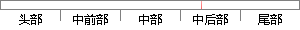

μ,∑)这些参数，我们的想法是：找到这样的一组参数，它所确定的概率分布生成这些给定的数据点的概率最大，而这个概率的乘积则称为似然函数。
片段位置图

相似结果|
相似片段 1：的值，例如，在混合高斯模型中，我们就需要确定巩、I-t。、∑。这些参数。 我们的想法是，找到这样一组参数，它所确定的概率分布生成这些给定的数据点的概率最大，而这个概率实际上就等于兀：，p(一)，我们
相似片段 2：具体过程如下：现在假设有 N 个数据点服从 GMM 分布，现在要确定里面的一些参数。如果找到的一组参数，它所确定的概率分布函数生成这些给定的数据点的概率最大，则认为这是最佳的估计参数。而这个概率
相似片段 3：。我们的想法是，找到这样一组参数，由这组找到的参数所确定的密度函数生成给定数据点的概率值最大，这个概率则是通过1 ( )N ii p x?? 计算得所得，这个乘积形式化上被叫作似然函数。
相似片段 4：高斯分布，用 z 来表示每一个高斯分布，对于每一个观察到的数据 x, 我们并不知道 x属于哪一个分布，也就是说 z 是我们观察不到的隐藏变量。那么，我们需要找到这样一组参数，它所确定的概率分布生成这些给定
相似片段 5：之后，再单独地考虑从这个构件的分布中选取一个点，回到了普通的高斯分布，转化为已知的问题。在混合高斯分布中，需要确定 kπ 、 k? 和 k∑参数，找出一组参数，它所确定的概率分布生成这些给定数据点
相似片段 6：对于一个训练向量胙@1，．．z『)，也可以数是分割后的片段。舰0可表示成Txl的矩阵，壤示每个向量维数。对于这阶数据点，在GMM中需要确定参数集五，就是找到这样一组参数，它所确定的概率分布生成这些
相似片段 7：■(薯；Uj,∑J) (2．11)j=l式中，需要估计的参数有每个高斯模型所占权重a，，每个高斯模型的均值甜，和方差∑f。即找到这样一组参数，它所确定的概率分布模型生成给定数据点的概率兀：。p(薯)最大
相似片段 8：参数，由它们所确定的概率分布生成给定数据记录的概率最大，即令所有数据记录的概率乘积：_Ⅳy=兀p(誓) (4．12)i=1达到最大。式中p(xr)是第f个数据记录出现的概率，Ⅳ是数据记录的总数，这个乘积称为似然函数。
|
※ 片段修改建议 ※
近似词参考：- 我们：咱们
- 想法：设法 设法主意
- 这样：如许
- 确定：肯定
- 概率：几率
- 分布：散布 漫衍
- 生成：天生
- 概率：几率
- 概率：几率
系统自动生成语句：μ,∑)这些参数，咱们的设法是：找到如许的一组参数，它所肯定的几率散布天生这些给定的数据点的几率最大，而这个几率的乘积则称为似然函数。
注：本片段修改建议为系统自动生成，仅供参考。